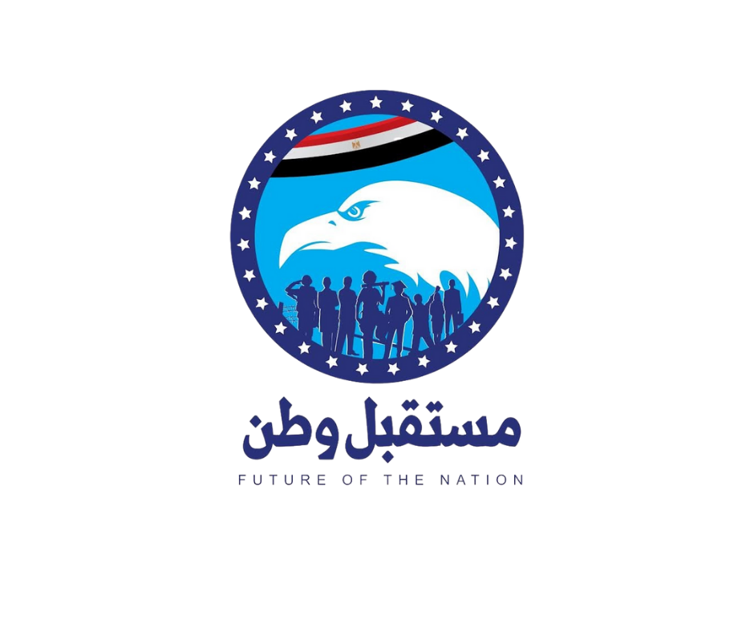

د. عمرو سعد الشلمة
عضو مجلس إدارة ومسؤول التخطيط المالي والتجاري
بمجموعة شركات إيچاست للاستثمار الزراعي
رقم ٤

إجمالات في المشروعات الزراعية القومية
على رأس مشروع الفرافرة
25,000 فدان
مشروع وادي النطرون
8,000 فدان
مشروع مستقبل مصر
6,000 فدان
إجمالي المساحة الزراعية
39,000 فدان
تحديات محافظة البحيرة
ارتفاع نسبة الفقر في بعض المناطق الريفية
مشكلات البنية التحتية والخدمات
معدلات بطالة مرتفعة بين الشباب
نقص مشروعات التأهيل والتدريب المهني
ضعف الكفاءة الصحية والتعليمية
العشوائيات في بعض المناطق
البرنامج الانتخابي - حلول عملية
تحسين البنية التحتية والخدمات
رفع كفاءة الطرق والصرف
تطوير شبكات الكهرباء والمياه
ربط القرى بالمراكز الكبرى
دعم الزراعة وتطوير الأراضي
الاستثمار في أراضي الشباب
ري حديث وتسميد ذكي
ربط الإنتاج بالتصنيع الزراعي
الاهتمام بالشباب والتعليم
برامج تدريب مهني حديثة
مراكز تعليم حرفي
مبادرات تعليم إلكتروني
دعم الاستثمار وتوفير فرص عمل
تيسير تراخيص المشروعات
تشجيع القطاع الخاص المحلي
مشروعات صغيرة ومتوسطة
تحسين الخدمات الصحية
تطوير المستشفيات العامة
توفير الأدوية في الوحدات
دعم القوافل الطبية بالمراكز